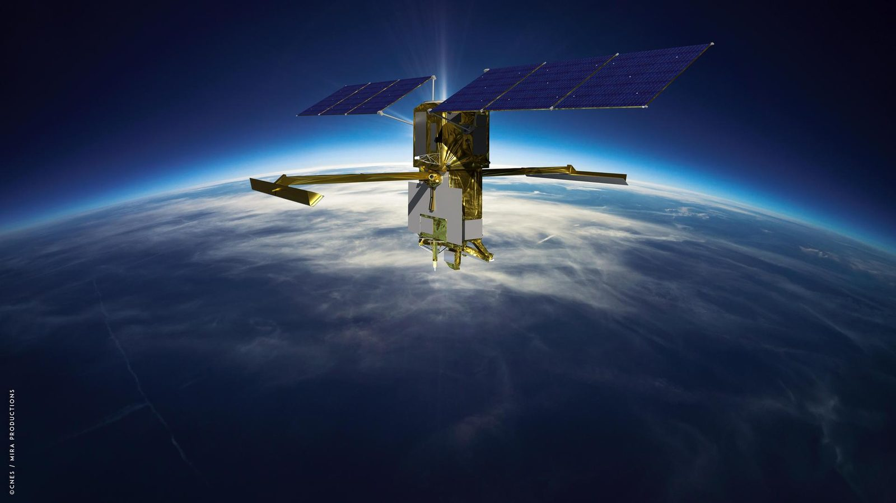

Trusted on the missions that cannot fail.
For more than four decades, SSAI has delivered on the nation's hardest missions. We serve the scientists, engineers, forecasters, analysts, and operators who explore, observe, and defend, with 160+ missions served, 575+ scientists, engineers, and IT professionals, and systems engineered to work the first time, and every time, from NASA's flagship programs to defense and national security.
A record the mission can trust.
We turn science into mission advantage. SSAI's past performance is anchored by large, multi-year contracts on the agencies' flagship science and engineering programs.
For more than four decades, we have studied, designed, built, integrated, tested, and operated the instruments, models, and data systems behind the nation's most important missions, so the scientists, engineers, and operators we serve can focus on what matters most: the mission. The same engineering discipline trusted on NASA's flagship programs now defends the nation across defense and national security.
The anchor contracts below show the scale, continuity, and breadth that agencies and primes rely on us to deliver, on missions that cannot fail.
Scale, continuity, and trust.
Five multi-year prime contracts on which agencies trust us with the work that cannot fail, across NASA's science and engineering directorates. Contract values reflect total program ceilings.
Electrical Systems Engineering Services
Study, design, development, fabrication, integration, testing, verification, and operations of spaceflight, airborne, and ground hardware and software.
- Program: ESES III, Electrical Systems Engineering Services
- End customer: NASA Goddard Space Flight Center
- Client / Division: Engineering Technology Directorate
- Contract value: $685M
- Period of performance: 11/2018 to 04/2025
- Funding type: CPAF (Cost Plus Award Fee)
- Scope: Spaceflight, airborne, and ground hardware and software across the full engineering lifecycle.
Hydrospheres, Biospheres and Geophysics
Scientific research services spanning space, airborne, in-situ, and laboratory technologies and observations.
- Program: HBG, Hydrospheres, Biospheres and Geophysics
- End customer: NASA Goddard Space Flight Center
- Client / Division: Earth Sciences Division
- Contract value: $425M
- Period of performance: 04/2020 to 11/2025
- Funding type: CPFF (Cost Plus Fixed Fee)
- Scope: Space, airborne, in-situ, and laboratory technologies and observations.
Science, Technology and Research Support Services
Research across Earth atmosphere and climate, extending to other planetary atmospheres.
- Program: STARSS III, Science, Technology and Research Support Services
- End customer: NASA Langley Research Center
- Client / Division: Science Directorate
- Contract value: $307M
- Period of performance: 12/2016 to 05/2023
- Funding type: CPFF (Cost Plus Fixed Fee)
- Scope: Earth atmosphere and climate research, extending to other planetary atmospheres.
Support for Atmospheric Modeling and Data Assimilation
Research across the Earth Sciences Division, supporting global atmospheric modeling and data assimilation.
- Program: SAMDA, Support for Atmospheric Modeling and Data Assimilation
- End customer: NASA Goddard Space Flight Center
- Client / Division: Global Modeling and Assimilation Office
- Contract value: $298M
- Period of performance: 03/2017 to 11/2025
- Funding type: CPFF (Cost Plus Fixed Fee)
- Scope: Research across the Earth Sciences Division.
Hydrospheric and Biospheric Sciences
Scientific research services across the Earth Sciences Division, the predecessor program to HBG.
- Program: HBS, Hydrospheric and Biospheric Sciences
- End customer: NASA Goddard Space Flight Center
- Client / Division: Earth Sciences Division
- Contract value: $249M
- Period of performance: 12/2014 to 05/2020
- Funding type: CPFF (Cost Plus Fixed Fee)
- Scope: Hydrospheric and biospheric scientific research across the Earth Sciences Division.
Proven where the mission cannot fail.
We engineer the instruments and science that have to work the first time, on missions that cannot fail. SSAI's engineering and science teams are proven on NASA's flagship missions, from imaging spectrometers and space telescopes to deep-space probes and the Earth-observing instruments that watch over a changing planet.
Flagship missions
We deliver the spaceflight engineering and instruments that have to work the first time, on the agency's most demanding programs.
OCI / PACE
We turn ocean color and aerosol observations into science, from the Ocean Color Instrument aboard the PACE mission.
Roman & JWST
We engineer the systems that let the universe come into focus, on the Roman Space Telescope and the James Webb Space Telescope.
Lucy & Dragonfly
We provide the instruments and engineering that reach where no mission has gone, on the Lucy Trojan-asteroid tour and the Dragonfly rotorcraft to Titan.
Mars Sample Return / CCRS
We engineer the Capture, Containment and Return System that has to perform once and perform right, for the Mars Sample Return campaign.
GeoXO, DAVINCI+ & TSIS-2
We deliver next-generation geostationary observation, Venus atmospheric science, and total solar irradiance monitoring the mission depends on.
Environmental intelligence instruments
We turn raw observations into the intelligence decision-makers act on. SSAI delivers the data products behind the Earth-observing instruments that monitor air quality, oceans, ice, and the biosphere.
Work that protects and proves out.
The agencies we serve recognize our delivery, and the people in the field measure it by what it makes possible.
- MERRA-2. The Modern-Era Retrospective analysis for Research and Applications, Version 2, earned a 2019 NASA Agency Honor Award for its advances in global atmospheric reanalysis.
- NOAA SARSAT. Search and rescue support credited with helping save roughly 7,000 lives over more than 25 years of operations, protecting the people who serve and explore.
- Operational continuity. 24/7 modeling and data assimilation that agencies depend on for daily decisions, engineered to work every time and processing millions of observations every day.
 NASA / Goddard Space Flight Center
NASA / Goddard Space Flight Center

NASA / JPL-Caltech NASA/NOAA GOES Project, Goddard Space Flight Center
NASA/NOAA GOES Project, Goddard Space Flight Center
 NASA / Goddard Space Flight Center
NASA / Goddard Space Flight Center
A partner the mission can trust.
From NASA's flagship missions to defense and national security, SSAI brings the scale, continuity, and engineering discipline that missions which cannot fail require. We turn science into mission advantage.